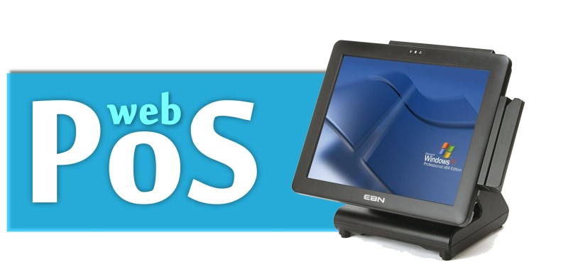

物流業 ERP (繁中)

》 代表性客戶：嘉湘科技股份有限公司
- 1988：公司成立，經銷王安電腦軟硬體
- 1990：投入流通業、商業自動化系統研發
- 1991：POS系統正式上市，千餘客戶使用
- 1995：國防部福利總處各單位正式採用，本系統取得經濟部著作權專利
- 1996：成立中部、南部辦事處
- 1997：完成總分公司系統架構
- 1998：金門、澎湖、台東客戶採用
- 1999：企業ERP資源整合系統完成
- 2000：成立全明公司視窗POS改版上市
- 2001：輔導客戶導入B2B、B2C（凱欣）
- 2002：視窗版Retail xp erp 125家採用
- 2003：視窗版Retail xp erp 簡體版上市
- 2004：嘉湘資訊昆山辦事處成立
- 2005：嘉湘資訊上海辦事處成立
網際網路版(Focus Web Base )進銷存管理系統 系統規格
系統管制：共用代號查詢\維護\印表、表頭\表尾查詢\維護、公司資料查詢\維護 等七個子系統。
基本資料維護：客戶基本資料查詢\維護\印表、廠商基本資料查詢\維護\印表、商品基本資料查詢\維護\印表 等7個子系統。
單據輸入：出貨單 查詢\維護、詢價單 查詢\維護、採購單 查詢\維護 等十七個子系統。
單據報表：報價單列印、訂貨單 列印、出貨單列印 等十四個報表。
統計報表：廠商己採購未進貨統計表、進貨單(總金額)彙總表列印、進貨單(明細)表列印 等十七個報表。
周邊管理：【盤點機】上/下傳結轉處理、【收銀機機】下傳結轉處理、【條碼列印機】條碼列印 等三個子系統。
收銀機報表：時段報表列印、部門報表列印、財務報表列印 等六個報表。
應收帳款管理：單據輸入 應收帳款管理 查詢/維護、應收帳款繳款 查詢/維護、應收帳款餘額檔 查詢/維護 等五個子系統。
應收帳款管理 統計報表：應收帳款沖帳紀錄表、繳款單列印、應收帳款異常報表 等四個報表。
應付帳款管理：單據輸入 應付帳款管理 查詢/維護、應付帳款沖帳 查詢/維護、應付帳款餘額檔 查詢/維護 等五個子系統。
應付帳款管理 統計報表：應付帳款沖帳紀錄表、付款單列印、應付帳款異常報表 等四個報表。
應收應付票據管理 單據輸入：應收應付票據 查詢/維護、票據處理後資料 查詢/維護、應收應付票據結帳處理 等三個子系統。
應收應付票據管理 統計報表：應收應付票據(處理前)列印、應收應付票據(處理後)列印、票據(託收)列印 等五個報表。
門市營運管理：營運日記維護作業、分店銀行業登錄作業、出勤及輪休 等八個子系統。
網際網路版(Focus Web Base )人事薪資管理系統 系統規格
系統管制：共用代號查詢\維護\印表、表頭\表尾查詢\維護、公司資料查詢\維護 等七個子系統。
基本資料維護：客戶基本資料查詢\維護\印表、廠商基本資料查詢\維護\印表、商品基本資料查詢\維護\印表 等7個子系統。
薪資管理 單據輸入：員工薪資發放資料 查詢\維護、員工薪資發放資料批次修改輸入、員工調薪異動資料 查詢\維護 等十八個子系統。
薪資管理 統計報表：員工薪資單 列印、員工薪資資料 列印、公司別個人薪資總表 列印 等十二個報表。
薪資管理 工具功能 各類資料匯入：借支檔匯入、薪資異動檔過帳處理、扣繳憑單檔過帳處理 等五個子系統。
薪資管理 工具功能 人事資料匯入：員工基本薪資資料匯入、員工投保記錄資料匯入、員工眷屬投保記錄資料匯入 等七個子系統。
人事管理系統 單據輸入：員工個人資料異動過帳處理 等一個子系統。
人事管理系統 統計報表：員工地址條 列印 等一個報表。
考勤管理系統 單據輸入：員工出勤時間檔 查詢\維護、臨時識別證代號檔 查詢\維護、休假日(國定假日)資料檔 查詢\維護 等十個子系統。
考勤管理系統 統計報表：差價人員清冊列印作業、員工勤惰一覽表、員工加班一覽表 等九個報表。
網際網路版(Focus Web Base )財物管理系統 系統規格
系統管制：共用代號查詢\維護\印表、表頭\表尾查詢\維護、公司資料查詢\維護 等七個子系統。
基本資料維護：會計科目查詢\維護\印表、客戶基本資料查詢\維護\印表、廠商基本資料查詢\維護\印表 等五個子系統。
總帳會計管理系統 單據輸入：傳票資料 查詢\維護、會計科目餘額查詢、常用傳票資料查詢\維護 等七個子系統。
總帳會計管理系統 單據報表：傳票資料列印、常用傳票 列印、報告式報表格式 列印 等三個報表。
總帳會計管理系統 統計報表：序時帳(日記帳) 列印、試算表(結算前) 列印、損益表(收支餘嵯表) 列印 等十七個報表。
應收帳款管理系統 單據輸入：應收帳款管理 查詢/維護、應收帳款繳款 查詢/維護、應收帳款餘額檔 查詢/維護 等五個子系統。
應收帳款管理系統 統計報表：應收帳款沖帳紀錄表、繳款單列印、應收帳款異常報表 等四個報表。
應付帳款管理系統 單據輸入：應付帳款管理 查詢/維護、應付帳款沖帳 查詢/維護、應付帳款餘額檔 查詢/維護 等五個子系統。
應付帳款管理系統 統計報表：應付帳款沖帳紀錄表、付款單列印、應付帳款異常報表 等四個報表。
應收應付票據管理系統 單據輸入：應收應付票據主檔 查詢/維護、票據處理後資料 查詢/維護、應收應付票據結帳處理 等八個子系統。
固定資產(財產)管理系統 單據輸入：固定資產基本資料 查詢\維護、固定資產取得 查詢\維護、財產攤提資料 查詢\維護 等四個子系統。
固定資產(財產)管理系統 統計報表：財產目錄報表、折舊攤提表 列印 等兩個報表。
固定資產(財產)管理系統 過帳處理：財產折舊提列計算 等一個系統。